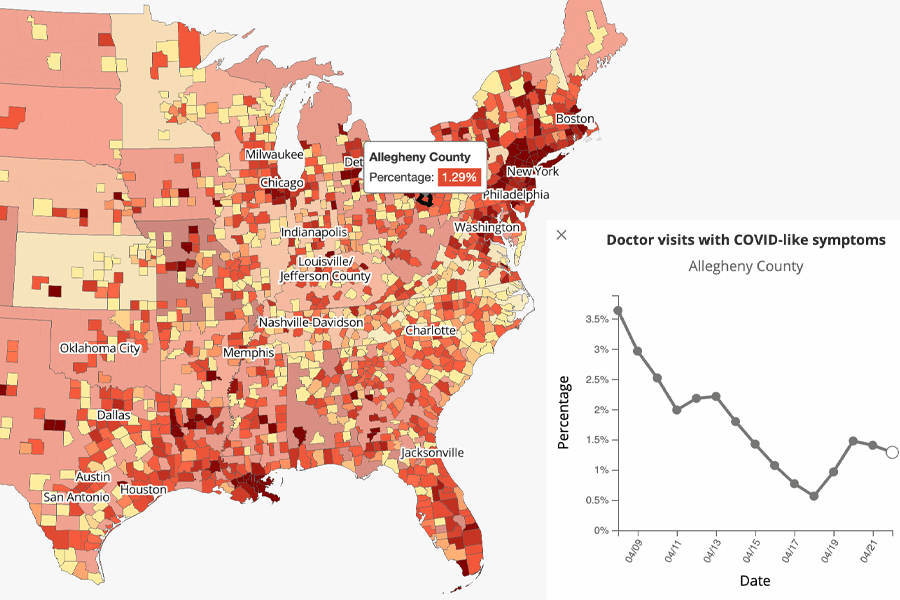

Our mission. Epidemiological forecasting is critically needed for decision making by public health officials, commercial and non-commercial institutions, and the general public. The Delphi group at Carnegie Mellon University focuses on developing the technological capability of epi-forecasting, and its role in decision making, both public and private. Our long term vision is to make epidemiological forecasting as universally accepted and useful as weather forecasting is today.
News
-
April 2020: We launched our COVIDcast system, which displays indicators related to COVID-19 activity level across the U.S. These indicators are derived from a variety of anonymized, aggregated data sources made available by multiple partners, and are publicly available at the COVIDcast endpoint of our Epidata API.
Related news articles:
 -
March 2020: we are focusing our efforts at this point on COVID-19 nowcasting and forecasting. We are adapting our existing systems, and developing new ones. Some of our regular activities may be halted as a result
-
October 2019: CDC has just named us "National Center of Excellence for Influenza Forecasting" (one of two nationally.)
-
October 2018: and yet again! Our forecasting systems took the top spot each of the three separate flu forecasting challenges of 2017-2018 (out of up to 30 submissions). (Results summary.)
-
October 2017: We did it again! Our two systems took the top two spots in the 2016-2017 flu forecasting challenge (out of 28 submissions). (Results summary.)
-
December 2016: Our system took the top stop in the 2015-2016 flu forecasting challenge. (Results summary.)
Operational Systems
-
Real-time indicators of COVID-19 Activity: COVIDcast.
-
"Wisdom-of-crowds" forecasting of ILI: Crowdcast.
Note: This system is has been repurposed to forecast ILI during the COVID-19 pandemic. -
State-level real-time estimates (nowcasts) of ILI (influenza-like illness): ILI Nearby.
Note: This system is designed to nowcast ILI driven by seasonal influenza and is NOT designed to nowcast ILI during the COVID-19 pandemic. We are only keeping it running as others may be relying on it. We are working on a new system for COVID-19. -
State-level weekly forecasts of ILI (influenza-like illness).
Note: This system is designed to forecast ILI driven by seasonal influenza and is NOT designed to forecast ILI during the COVID-19 pandemic. We have temporarily shut it down to focus on COVID-19. We are working on a new system for COVID-19.
Activities
We have participated, and have done very well, in all epidemiological forecasting challenges organized by the US government to date:
-
Forecasting Seasonal Influenza in the US (by CDC): 2013 -- current
-
Forecasting Dengue in Puerto Rico and Peru (by the White House OSTP )
-
Forecasting the Chikungunya invasion of the Americas (by DARPA )
Members
Roni Rosenfeld
Homepage

Logan Brooks


David Farrow

Maria Jahja
Homepage

Aaron Rumack


Brian Clark
Homepage
We are faculty, students, and staff at Carnegie Mellon University (some alumni). We are also part of a larger, University of Pittsburgh-based MIDAS National Center of Excellence, which includes epidemiologists, virologists, public health experts, infectious disease MDs, legal and economic experts, and other computationalists.
Members of The Delphi COVID-19 Pandemic Response Team
See the list at covidcast.cmu.edu.
Publicly Available Tools
-
Epidemiological forecasting R package: epiforecast
-
Epidemiological nowcasting via sensor fusion: nowcast
-
Epidemiological time series visualizer: EpiVis
-
API for getting up-to-date epidemiological data: EpiData (also available via a web interface through EpiVis )
-
Visual comparison of scored submissions to CDC Flu Forecasting Challenge: FluScores (provide your own score files)
-
Epidemiological modeling utilities (e.g., date/epi-weeks conversions): utils
All source code is freely available on GitHub.
Research and White Papers
-
Brooks. Pancasting: forecasting epidemics from provisional data. PhD thesis, 2020.
-
Jahja, Farrow, Rosenfeld, Tibshirani. Kalman filter, sensor fusion, and constrained regression: equivalences and insights. Neural Information Processing Systems 2019.
-
Brooks, Farrow, Hyun, Tibshirani, Rosenfeld. Nonmechanistic forecasts of seasonal influenza with iterative one-week-ahead distributions. PLOS Computational Biology, 2018.
-
Farrow, Brooks, Hyun, Tibshirani, Burke, Rosenfeld. A human judgment approach to epidemiological forecasting. PLOS Computational Biology, 2017.
-
Farrow. Modeling the past, present, and future of influenza . PhD thesis, 2016.
-
Brooks, Farrow, Hyun, Tibshirani, Rosenfeld. Flexible modeling of epidemics with an empirical Bayes framework. PLOS Computational Biology, 2015.
-
Rosenfeld. Predicting the predictable, presentation, 2013.
-
Rosenfeld, Grefenstette, Burke. A proposal for standardized evaluation of epidemiological models. White paper, 2012.
We are thankful for generous financial support from